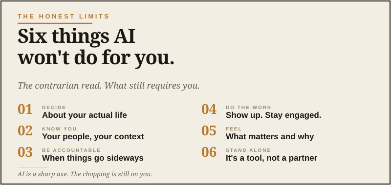

The Honest Limits
Six things AI won't do for you.

Most of what I write on this site is pretty bullish on AI. I think it’s a genuinely useful tool. I think most grown men should be using it. I think the people who don’t learn to use it well are going to find themselves at a disadvantage in the next few years.
But there’s a flip side worth being honest about. There are a lot of things AI won’t do for you, no matter how clever your prompt is or which subscription you’re paying for. Pretending otherwise sets you up for disappointment, bad decisions, or worse. I like useful tools. I do not like tools that encourage grown adults to stop using their own judgment.
This is the contrarian piece. The one that should keep your expectations calibrated.
AI is a powerful tool. Powerful tools don’t replace judgment. They amplify whatever judgment you already had.
It won’t make you smarter
This is the one I want to start with because it matters most.
AI can do a lot of work for you. It can summarize, draft, compare, plan, organize. But the conclusions it produces — and your decisions about what to do with them — depend on the same judgment you brought to the conversation in the first place.
If you don’t know much about a topic and AI gives you a confident-sounding answer, you don’t actually know whether the answer is good. You just have an answer. The risk is mistaking the speed of getting an answer for actually understanding the topic.
Real understanding still comes from reading, asking experts, doing the thing yourself, and building experience over time. AI accelerates the surface layer. It does not deepen the deep layer. That part is on you.
It won’t verify what it tells you
AI is confident. It is also, with some regularity, wrong.
It will give you a fact that sounds plausible and is actually fabricated. It will tell you a restaurant is open when it’s closed. It will recommend a model of car that was discontinued two years ago. It will quote a study that doesn’t exist.
This isn’t a bug — it’s how the technology works. AI tools are built to produce fluent answers, not necessarily accurate ones. They’re getting better at this. But for the foreseeable future, anything important you get from AI needs to be verified against a real source before you act on it.
If the stakes are real — your money, your health, your business, your family — verify. Always. That is not paranoia. That is adulthood.
It won’t replace doing the work
This is the trap a lot of guys fall into when they first start using AI. They imagine they’re going to outsource the parts of life they don’t enjoy and free themselves up for the parts they do.
It doesn’t work that way. AI can help you draft an email faster, but you still have to send it. It can help you build a workout plan, but you still have to lift the weights. It can help you think through a business idea, but you still have to start the business.
The work is still the work. AI moves some of the friction. It does not move the fundamental requirement that things you want in life mostly come from doing things. I wish there were a prompt that cleaned the garage, fixed the sprinkler, and got me in better shape. There is not. Annoying, but clarifying.
It won’t replace your relationships
I wrote a whole article about using AI as a thinking partner, and I stand by it. AI is genuinely useful for sorting through your own thoughts, especially in the middle of a busy life where uninterrupted thinking is hard to come by.
But it’s not a substitute for actual people. The conversations that change you happen with humans who know you, care about you, and have skin in the game. AI doesn’t. It’s patient and helpful, but it doesn’t love you, doesn’t remember you across long stretches of life, doesn’t show up when you’re in a hard spot.
Use AI to think. Use the thinking to show up better in your real relationships. Don’t use AI to replace them. That’s a road that leads somewhere bleak.
It won’t protect you from yourself
AI is fundamentally an agreeable tool. If you’re looking for validation, you’ll usually find it. If you’ve already decided to do something, AI will probably help you justify it. If you ask leading questions, you’ll get leading answers.
This is dangerous when you’re making decisions you’re emotionally invested in. The buyout offer that excites you. The relationship choice you’re halfway through making. The investment that feels right.
The fix is to specifically ask AI to push back. Tell it to argue with you. Tell it to play devil’s advocate. Tell it to find the weak spots in your reasoning. Without that explicit instruction, you’ll often get a friendly conversation that doesn’t actually challenge anything.
And even with that instruction — sometimes you need a real human who knows you to tell you the hard thing. AI won’t do that the way a good friend will.
It won’t do the things only you can do
This is the most important one, and the one I think about a lot.
The things that make a life — showing up for your kids, building something with your hands, being present with your spouse, leading people, taking responsibility for hard decisions, doing the right thing when nobody’s watching — none of that gets handed off to AI. Ever.
Those are the things only you can do. And they’re the things that matter most. The rest of the stuff AI helps with — the emails, the trip plans, the comparisons, the research — that’s the surface layer of life. Useful to handle well, but not the substance.
If AI ever feels like it’s freeing you up to focus on what really matters, that’s the right use. If it feels like it’s replacing what really matters, you’re using it wrong.
The honest summary
AI is a remarkable tool that will get more useful every year for the foreseeable future. The capable man who learns to use it well has an edge. The one who refuses to learn it falls behind.
But the tool isn’t the point. The point is the life you’re trying to build, the people you’re trying to take care of, the work you want to leave behind. AI is one new instrument in the workshop. It doesn’t replace the workshop, the craft, or the man swinging the hammer.
Use it well. But don’t mistake it for more than it is.